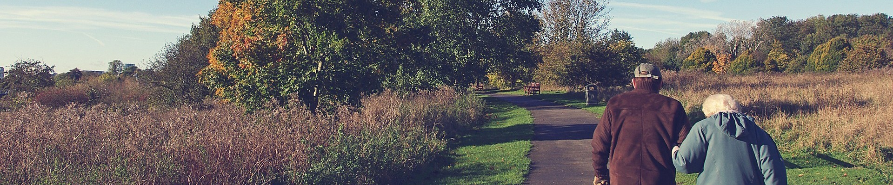

华软颐养院
引领国际健康养老新生活
888-888-8888


外出注意事项
一、结伴出游
老人上了年纪，腿脚不够利落，最理想的是老人与一位比较年轻的人结伴同行
，这样彼此之间可以有个照应。再者随身还需带一根拐杖，以助一臂之力，确
保行走安全。
二、注意保暖
出游气候多变，反复无常，乍暖还寒，容易引起流感等呼吸道传染病。因此，
出游的老人应备足备齐衣物、用品等，以防不测。
三、备齐药物
医师提醒慢性病老人，出游携带一些防治慢性病的药，如患有高血压病、糖尿
病、冠心病者。同时，还应备有感冒、腹泻、止痛之类的药物。急救药随身带
，以应急需。若晕车船，还应带上防晕药。
四、注意饮食卫生
旅途中饮食宜清淡，少吃方便面，多吃蔬菜水果，防止便秘。尽量在住地餐厅
用餐，自备餐具和水具，既方便又卫生。对各地的美味佳肴、风味小吃等应以
品尝为主，一次不宜吃得过多，更不能暴饮暴食，以免引起消化不良等。
五、防止意外
老人行动宜谨慎小心，坐车、乘船、登山均需精心安排，最好有人照料、随行。
青岛养老院建议老人出游时，应尽量避免走陡峭的小道，不要独自攀登山林石壁
，以免发生意外。
以上是华软颐养院为打算外出的老年朋友总结的注意事项，提醒老人出游一定要
精心安排，有一个美好的出游体验!